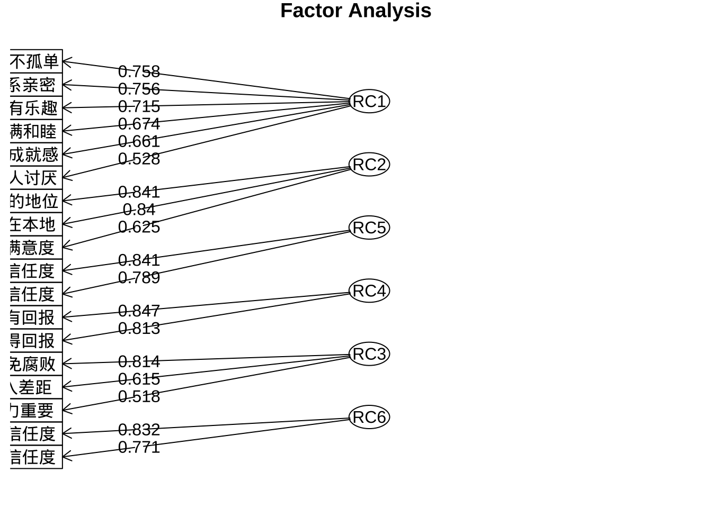
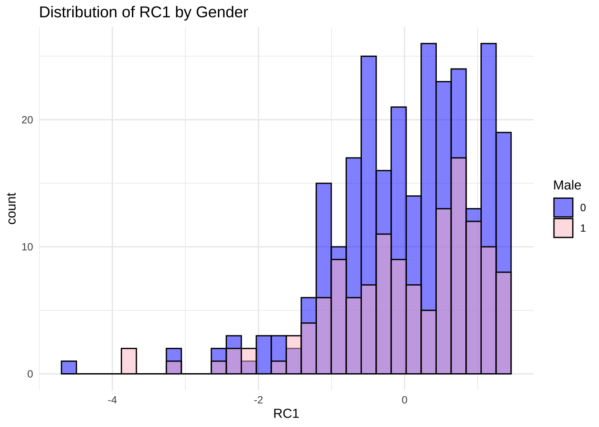
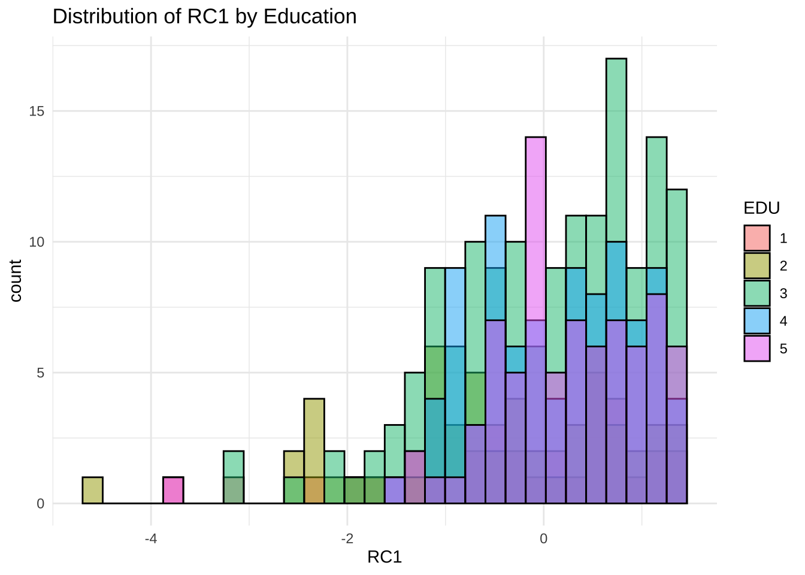

点击下载数据文件: attitude.xlsx
点击下载数据文件: attitude.xlsx library(readxl)
attitude <- read_excel("attitude.xlsx") 主观态度因子分析
数据文件
数据文件变量含义：
urban=1,城镇；urban=0, 乡村
male=1, 男性；female=1, 女性
EDU=1，文盲半文盲没上小学；EDU=2，小学；EDU=3，初中；EDU=4，高中/中专/高职；EDU=5，大专/本科/硕士
年龄
主要工作年收入
导入数据
library(readxl)
attitude <- read_excel("attitude.xlsx")
library(tidyverse)
fa_df <- attitude %>%
dplyr::select(您人缘关系有多好分:子女有出息)因子分析
# 因子分析
library(psych)
fa_result <- principal(fa_df,
nfactors = 10,
rotate = "promax")
fa_resultPrincipal Components Analysis
Call: principal(r = fa_df, nfactors = 10, rotate = "promax")
Standardized loadings (pattern matrix) based upon correlation matrix
RC1 RC4 RC8 RC9 RC2 RC3 RC6 RC10 RC5
您人缘关系有多好分 0.26 0.28 0.07 0.39 -0.12 -0.10 0.13 -0.13 0.13
您有多幸福分 0.41 0.29 -0.06 0.29 0.13 -0.05 0.04 -0.14 -0.06
对父母的信任度 0.01 -0.21 -0.05 0.98 -0.11 -0.04 0.26 -0.02 -0.14
对邻居的信任度 -0.28 -0.13 0.09 0.75 0.18 0.05 -0.08 0.22 0.24
对美国人的信任度 0.08 -0.01 0.05 -0.10 0.27 -0.07 0.05 -0.19 0.77
对陌生人的信任度 -0.06 0.02 -0.19 0.09 0.04 0.02 0.01 0.02 0.80
对干部的信任度 -0.14 -0.06 0.08 0.03 0.80 0.11 -0.04 0.02 0.21
对医生的信任度 0.14 0.01 0.01 -0.02 0.75 0.08 0.12 -0.04 0.07
公平竞争才有和谐人际 0.07 0.20 0.26 0.18 0.07 0.02 0.89 -0.08 0.04
财富反映个人成就 0.10 -0.02 0.11 0.02 -0.11 0.38 0.50 0.21 -0.06
努力工作能有回报 -0.12 -0.02 -0.16 -0.02 0.27 0.82 0.04 -0.08 -0.11
聪明才干能得回报 -0.03 -0.07 -0.14 -0.01 -0.06 0.88 0.03 -0.08 0.05
成大事难免腐败 -0.16 -0.10 0.92 0.02 -0.01 -0.20 0.23 -0.03 -0.01
有关系比有能力重要 -0.04 0.04 0.13 0.12 -0.56 0.27 -0.08 -0.10 0.07
提高生活水平机会很大 -0.05 0.08 -0.01 0.19 0.07 0.06 0.24 -0.01 -0.02
经济繁荣要拉大收入差距 -0.20 -0.02 0.83 -0.02 0.08 -0.05 0.16 -0.14 -0.11
对自己生活满意度 0.08 0.58 0.03 -0.07 0.25 0.07 0.00 -0.08 -0.13
对自己未来信心程度 0.06 0.45 -0.17 0.16 0.06 0.10 -0.18 0.14 -0.07
您的收入在本地 -0.10 0.95 -0.04 -0.21 -0.06 -0.02 0.17 -0.06 0.03
您的地位 -0.29 1.06 -0.06 -0.12 -0.08 -0.10 0.12 0.28 0.04
很有钱 0.10 0.14 0.18 -0.18 -0.01 -0.01 0.15 0.60 0.00
不被人讨厌 -0.07 0.13 -0.21 0.18 0.01 -0.10 -0.16 0.88 -0.11
生活有乐趣 0.68 -0.07 -0.14 0.08 0.07 -0.11 0.15 0.26 0.00
与配偶关系亲密 1.06 -0.16 -0.27 -0.09 -0.12 -0.01 0.07 -0.14 0.04
不孤单 0.69 -0.12 0.05 0.02 -0.02 -0.07 -0.10 0.17 0.02
有成就感 0.50 -0.02 0.06 -0.13 0.00 0.11 0.15 0.27 0.21
死后有人念想 0.25 0.15 0.12 -0.08 -0.16 0.04 -0.32 -0.03 0.21
家庭美满和睦 0.85 -0.07 -0.01 -0.10 0.13 -0.04 0.03 -0.09 -0.10
传宗接代 0.26 0.13 0.31 0.01 -0.08 0.11 -0.16 -0.08 -0.05
子女有出息 0.23 -0.13 0.33 0.04 0.14 0.07 -0.33 0.21 -0.21
RC7 h2 u2 com
您人缘关系有多好分 0.00 0.46 0.54 4.0
您有多幸福分 -0.21 0.65 0.35 4.0
对父母的信任度 0.24 0.72 0.28 1.5
对邻居的信任度 -0.05 0.67 0.33 2.0
对美国人的信任度 -0.10 0.67 0.33 1.5
对陌生人的信任度 0.07 0.69 0.31 1.2
对干部的信任度 -0.02 0.68 0.32 1.3
对医生的信任度 0.03 0.63 0.37 1.2
公平竞争才有和谐人际 0.21 0.63 0.37 1.6
财富反映个人成就 -0.01 0.52 0.48 2.7
努力工作能有回报 0.15 0.65 0.35 1.5
聪明才干能得回报 -0.03 0.65 0.35 1.1
成大事难免腐败 -0.13 0.61 0.39 1.4
有关系比有能力重要 -0.40 0.53 0.47 2.8
提高生活水平机会很大 0.79 0.63 0.37 1.4
经济繁荣要拉大收入差距 0.14 0.55 0.45 1.4
对自己生活满意度 -0.17 0.54 0.46 1.9
对自己未来信心程度 -0.03 0.46 0.54 2.4
您的收入在本地 0.10 0.66 0.34 1.2
您的地位 0.10 0.75 0.25 1.4
很有钱 -0.23 0.55 0.45 2.1
不被人讨厌 0.08 0.70 0.30 1.4
生活有乐趣 0.00 0.54 0.46 1.6
与配偶关系亲密 0.00 0.69 0.31 1.3
不孤单 -0.02 0.58 0.42 1.3
有成就感 0.14 0.56 0.44 2.7
死后有人念想 0.32 0.62 0.38 5.2
家庭美满和睦 -0.05 0.58 0.42 1.2
传宗接代 0.30 0.62 0.38 4.6
子女有出息 -0.03 0.58 0.42 5.2
RC1 RC4 RC8 RC9 RC2 RC3 RC6 RC10 RC5 RC7
SS loadings 3.33 2.43 1.66 1.73 1.92 1.61 1.21 1.59 1.58 1.29
Proportion Var 0.11 0.08 0.06 0.06 0.06 0.05 0.04 0.05 0.05 0.04
Cumulative Var 0.11 0.19 0.25 0.31 0.37 0.42 0.46 0.52 0.57 0.61
Proportion Explained 0.18 0.13 0.09 0.09 0.10 0.09 0.07 0.09 0.09 0.07
Cumulative Proportion 0.18 0.31 0.40 0.50 0.60 0.69 0.76 0.84 0.93 1.00
With component correlations of
RC1 RC4 RC8 RC9 RC2 RC3 RC6 RC10 RC5 RC7
RC1 1.00 0.50 0.38 0.44 0.25 0.28 -0.38 0.31 0.11 0.18
RC4 0.50 1.00 0.29 0.42 0.31 0.27 -0.39 -0.05 0.14 0.12
RC8 0.38 0.29 1.00 0.13 -0.07 0.45 -0.29 0.29 0.08 0.20
RC9 0.44 0.42 0.13 1.00 0.36 0.18 -0.33 -0.04 0.12 -0.03
RC2 0.25 0.31 -0.07 0.36 1.00 0.03 -0.15 -0.09 0.05 0.04
RC3 0.28 0.27 0.45 0.18 0.03 1.00 -0.08 0.22 0.14 0.13
RC6 -0.38 -0.39 -0.29 -0.33 -0.15 -0.08 1.00 0.03 -0.02 -0.21
RC10 0.31 -0.05 0.29 -0.04 -0.09 0.22 0.03 1.00 0.08 0.10
RC5 0.11 0.14 0.08 0.12 0.05 0.14 -0.02 0.08 1.00 0.09
RC7 0.18 0.12 0.20 -0.03 0.04 0.13 -0.21 0.10 0.09 1.00
Mean item complexity = 2.1
Test of the hypothesis that 10 components are sufficient.
The root mean square of the residuals (RMSR) is 0.06
with the empirical chi square 1152.74 with prob < 1.7e-141
Fit based upon off diagonal values = 0.89#按因子载荷系数降序排列
print(fa_result$loadings,
digits = 3, cutoff = 0.5,sort = T)
Loadings:
RC1 RC4 RC8 RC9 RC2 RC3 RC6 RC10
生活有乐趣 0.684
与配偶关系亲密 1.061
不孤单 0.690
有成就感 0.502
家庭美满和睦 0.853
对自己生活满意度 0.577
您的收入在本地 0.949
您的地位 1.057
成大事难免腐败 0.922
经济繁荣要拉大收入差距 0.833
对父母的信任度 0.978
对邻居的信任度 0.753
对干部的信任度 0.803
对医生的信任度 0.749
有关系比有能力重要 -0.557
努力工作能有回报 0.824
聪明才干能得回报 0.882
公平竞争才有和谐人际 0.890
很有钱 0.599
不被人讨厌 0.875
对美国人的信任度
对陌生人的信任度
提高生活水平机会很大
您人缘关系有多好分
您有多幸福分
财富反映个人成就
对自己未来信心程度
死后有人念想
传宗接代
子女有出息
RC5 RC7
生活有乐趣
与配偶关系亲密
不孤单
有成就感
家庭美满和睦
对自己生活满意度
您的收入在本地
您的地位
成大事难免腐败
经济繁荣要拉大收入差距
对父母的信任度
对邻居的信任度
对干部的信任度
对医生的信任度
有关系比有能力重要
努力工作能有回报
聪明才干能得回报
公平竞争才有和谐人际
很有钱
不被人讨厌
对美国人的信任度 0.766
对陌生人的信任度 0.801
提高生活水平机会很大 0.791
您人缘关系有多好分
您有多幸福分
财富反映个人成就
对自己未来信心程度
死后有人念想
传宗接代
子女有出息
RC1 RC4 RC8 RC9 RC2 RC3 RC6 RC10 RC5 RC7
SS loadings 3.813 2.986 2.178 2.066 1.939 1.845 1.717 1.698 1.595 1.335
Proportion Var 0.127 0.100 0.073 0.069 0.065 0.061 0.057 0.057 0.053 0.045
Cumulative Var 0.127 0.227 0.299 0.368 0.433 0.494 0.551 0.608 0.661 0.706第一轮调整：减少原始变量个数
# 第一轮调整：减少原始变量个数
# 把载荷变为普通矩阵
L <- as.matrix(fa_result$loadings) # rows = variables, cols = factors
# 计算每个变量在所有因子上的最大绝对载荷
max_abs_loading <- apply(abs(L), 1, max)
# 找出所有最大绝对载荷 < 0.5 的变量
threshold <- 0.5
remove_vars <- names(max_abs_loading)[max_abs_loading < threshold]
remove_vars[1] "您人缘关系有多好分" "您有多幸福分" "财富反映个人成就"
[4] "对自己未来信心程度" "死后有人念想" "传宗接代"
[7] "子女有出息" # 从 fa_df 中剔除这些变量，得到新的数据集
fa_df_trim <- fa_df[, !(names(fa_df) %in% remove_vars), drop = FALSE]
# 重新做主成分/因子分析
fa_result_trim <- principal(fa_df_trim,
nfactors = 7,
rotate = "promax",
scores = TRUE)
# 查看结果
print(fa_result_trim, cutoff = 0.3)Principal Components Analysis
Call: principal(r = fa_df_trim, nfactors = 7, rotate = "promax", scores = TRUE)
Standardized loadings (pattern matrix) based upon correlation matrix
RC1 RC4 RC2 RC7 RC6 RC5 RC3 h2 u2 com
对父母的信任度 0.17 -0.22 0.76 0.13 0.12 -0.16 0.02 0.52 0.48 1.5
对邻居的信任度 0.16 -0.13 0.70 0.04 0.15 0.25 0.12 0.55 0.45 1.6
对美国人的信任度 -0.05 0.07 0.07 -0.11 -0.03 0.77 -0.01 0.62 0.38 1.1
对陌生人的信任度 -0.02 -0.02 -0.01 0.01 0.03 0.85 -0.16 0.70 0.30 1.1
对干部的信任度 -0.06 0.05 0.40 -0.04 -0.40 0.23 0.06 0.58 0.42 2.7
对医生的信任度 0.08 0.11 0.34 -0.01 -0.45 0.08 -0.03 0.56 0.44 2.1
公平竞争才有和谐人际 -0.06 0.03 -0.01 0.34 -0.11 0.12 0.23 0.29 0.71 2.4
努力工作能有回报 -0.11 0.01 0.09 0.83 -0.11 -0.11 -0.15 0.66 0.34 1.2
聪明才干能得回报 -0.01 0.00 0.09 0.85 0.30 0.02 -0.11 0.64 0.36 1.3
成大事难免腐败 -0.02 -0.07 0.07 -0.19 0.20 -0.03 0.86 0.66 0.34 1.2
有关系比有能力重要 0.04 0.16 0.23 0.13 0.91 0.04 0.16 0.65 0.35 1.3
提高生活水平机会很大 0.02 0.03 0.01 0.22 -0.42 -0.08 0.13 0.31 0.69 1.9
经济繁荣要拉大收入差距 -0.10 0.06 0.06 -0.03 -0.01 -0.19 0.76 0.56 0.44 1.2
对自己生活满意度 0.12 0.62 0.17 0.01 0.01 -0.14 0.01 0.50 0.50 1.3
您的收入在本地 -0.03 0.90 -0.16 0.04 0.13 0.02 -0.04 0.71 0.29 1.1
您的地位 0.06 0.86 -0.28 -0.03 0.03 0.06 0.01 0.68 0.32 1.2
很有钱 0.44 -0.05 -0.42 0.08 0.01 0.12 0.19 0.47 0.53 2.6
不被人讨厌 0.56 -0.13 -0.20 0.00 -0.22 -0.07 -0.03 0.39 0.61 1.7
生活有乐趣 0.71 -0.04 0.11 -0.08 -0.10 -0.01 -0.04 0.53 0.47 1.1
与配偶关系亲密 0.74 0.04 0.14 -0.01 0.11 -0.03 -0.24 0.58 0.42 1.4
不孤单 0.76 0.04 0.20 -0.11 0.11 -0.06 0.08 0.60 0.40 1.3
有成就感 0.61 0.03 -0.08 0.17 0.06 0.19 0.13 0.56 0.44 1.5
家庭美满和睦 0.64 0.10 0.13 -0.06 -0.07 -0.11 -0.06 0.48 0.52 1.3
RC1 RC4 RC2 RC7 RC6 RC5 RC3
SS loadings 3.01 1.93 1.74 1.57 1.49 1.60 1.46
Proportion Var 0.13 0.08 0.08 0.07 0.06 0.07 0.06
Cumulative Var 0.13 0.21 0.29 0.36 0.42 0.49 0.56
Proportion Explained 0.24 0.15 0.14 0.12 0.12 0.13 0.11
Cumulative Proportion 0.24 0.39 0.52 0.64 0.76 0.89 1.00
With component correlations of
RC1 RC4 RC2 RC7 RC6 RC5 RC3
RC1 1.00 0.14 0.05 0.16 -0.19 0.10 0.13
RC4 0.14 1.00 0.30 0.17 -0.35 0.17 0.08
RC2 0.05 0.30 1.00 0.04 -0.36 0.17 -0.12
RC7 0.16 0.17 0.04 1.00 -0.24 0.21 0.38
RC6 -0.19 -0.35 -0.36 -0.24 1.00 -0.23 -0.10
RC5 0.10 0.17 0.17 0.21 -0.23 1.00 0.10
RC3 0.13 0.08 -0.12 0.38 -0.10 0.10 1.00
Mean item complexity = 1.5
Test of the hypothesis that 7 components are sufficient.
The root mean square of the residuals (RMSR) is 0.07
with the empirical chi square 980.92 with prob < 2.5e-138
0.3
Fit based upon off diagonal values = 0.81print(fa_result_trim$loadings,
digits = 3, cutoff = 0.5,sort = T)
Loadings:
RC1 RC4 RC2 RC7 RC6 RC5 RC3
不被人讨厌 0.563
生活有乐趣 0.708
与配偶关系亲密 0.738
不孤单 0.760
有成就感 0.612
家庭美满和睦 0.640
对自己生活满意度 0.624
您的收入在本地 0.905
您的地位 0.856
对父母的信任度 0.763
对邻居的信任度 0.705
努力工作能有回报 0.834
聪明才干能得回报 0.852
有关系比有能力重要 0.912
对美国人的信任度 0.767
对陌生人的信任度 0.849
成大事难免腐败 0.860
经济繁荣要拉大收入差距 0.761
对干部的信任度
对医生的信任度
公平竞争才有和谐人际
提高生活水平机会很大
很有钱
RC1 RC4 RC2 RC7 RC6 RC5 RC3
SS loadings 3.029 2.097 1.882 1.729 1.673 1.625 1.621
Proportion Var 0.132 0.091 0.082 0.075 0.073 0.071 0.070
Cumulative Var 0.132 0.223 0.305 0.380 0.453 0.523 0.594第二轮调整：减少原始变量个数
# 第2轮调整：减少原始变量个数
# 把载荷变为普通矩阵
L <- as.matrix(fa_result_trim$loadings) # rows = variables, cols = factors
# 计算每个变量在所有因子上的最大绝对载荷
max_abs_loading <- apply(abs(L), 1, max)
# 找出所有最大绝对载荷 < 0.5 的变量
threshold <- 0.5
remove_vars <- names(max_abs_loading)[max_abs_loading < threshold]
remove_vars[1] "对干部的信任度" "对医生的信任度" "公平竞争才有和谐人际"
[4] "提高生活水平机会很大" "很有钱" # 从 fa_df 中剔除这些变量，得到新的数据集
fa_df_trim2 <- fa_df_trim[, !(names(fa_df_trim) %in% remove_vars), drop = FALSE]
# 重新做主成分/因子分析
fa_result_trim2 <- principal(fa_df_trim2,
nfactors = 6,
rotate = "promax",
scores = TRUE)
# 查看结果
print(fa_result_trim2$loadings,
digits = 3, cutoff = 0.5,sort = T)
Loadings:
RC1 RC2 RC5 RC4 RC3 RC6
不被人讨厌 0.528
生活有乐趣 0.715
与配偶关系亲密 0.756
不孤单 0.758
有成就感 0.661
家庭美满和睦 0.674
对自己生活满意度 0.625
您的收入在本地 0.840
您的地位 0.841
对美国人的信任度 0.789
对陌生人的信任度 0.841
努力工作能有回报 0.847
聪明才干能得回报 0.813
成大事难免腐败 0.814
有关系比有能力重要 0.518
经济繁荣要拉大收入差距 0.615
对父母的信任度 0.832
对邻居的信任度 0.771
RC1 RC2 RC5 RC4 RC3 RC6
SS loadings 2.849 1.862 1.507 1.460 1.449 1.387
Proportion Var 0.158 0.103 0.084 0.081 0.080 0.077
Cumulative Var 0.158 0.262 0.345 0.427 0.507 0.584绘制因子载荷系数图
# 绘制因子载荷系数图
fa.diagram(fa_result_trim2$loadings, digits = 3)
计算因子得分
# 保存最终数据集
final_data <- cbind(attitude, fa_result_trim2$scores)不同组别因子得分均值的比较
# 分析男性和女性在各个因子上的得分差异
final_data %>%
group_by(male) %>%
summarise(across(starts_with("RC"),
mean, na.rm = TRUE))# A tibble: 2 × 7
male RC1 RC2 RC5 RC4 RC3 RC6
<dbl> <dbl> <dbl> <dbl> <dbl> <dbl> <dbl>
1 0 0.0186 0.0622 0.0116 0.0158 -0.0526 0.00344
2 1 -0.0372 -0.124 -0.0233 -0.0316 0.105 -0.00689不同组别因子得分分布的比较
# 分析男性和女性在因子1上的得分的分布的直方图
final_data %>%
ggplot(aes(RC1, fill = as.factor(male))) +
geom_histogram(col = 1, position = "identity", alpha = 0.5) +
labs(fill = "Male") +
scale_fill_manual(values = c("blue", "pink")) +
theme_minimal() +
ggtitle("Distribution of RC1 by Gender")
# 分析不同教育水平在各个因子上的得分差异因1的分布的直方图
final_data %>%
ggplot(aes(RC1, fill = as.factor(EDU))) +
geom_histogram(col = 1, position = "identity", alpha = 0.5) +
labs(fill = "EDU") +
theme_minimal() +
ggtitle("Distribution of RC1 by Education")
K-means聚类分析
# 利用6个因子得分进行K-means聚类分析
# K-means聚类分析
set.seed(123) # For reproducibility
kmeans_result <- kmeans(final_data %>% select(starts_with("RC"),
年龄,
主要工作总收入),
centers =3,
nstart = 25)
final_data$cluster <- as.factor(kmeans_result$cluster)
# 查看各聚类中心
kmeans_result$centers RC1 RC2 RC5 RC4 RC3 RC6
1 -0.03203950 0.11043648 0.85644877 -0.35187921 -0.44126844 -0.698313749
2 -0.02811000 0.01085293 -0.07286533 0.03163693 -0.05559427 -0.008493651
3 0.04752412 -0.02286470 0.07992319 -0.03562132 0.11139376 0.046073127
年龄 主要工作总收入
1 35.14286 186486.29
2 31.61847 13317.55
3 30.34868 44529.61